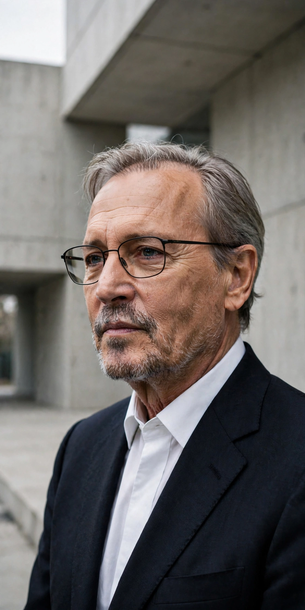

| Sir David Chipperfield | |
|---|---|
 | |
| Born | 18 December 1953, London, England |
| Nationality | British |
| Alma mater | Kingston School of Art; Architectural Association |
| Occupation | Architect |
| Awards | Pritzker Architecture Prize (2023); RIBA Royal Gold Medal (2011); Stirling Prize (2007) |
Sir David Alan Chipperfield (born 18 December 1953) is a British architect known for his restrained, context-sensitive buildings, particularly museums and cultural institutions. He founded David Chipperfield Architects in 1985 and received the Pritzker Architecture Prize in 2023.
Chipperfield studied at Kingston School of Art and the Architectural Association in London, working for Richard Rogers and Norman Foster before establishing his own practice. Finding few commissions in Britain in the 1980s, he built his early reputation in Japan and later in continental Europe, especially Germany and Spain.
His reconstruction of the war-damaged Neues Museum in Berlin (completed 2009, with Julian Harrap) became a landmark of contemporary conservation, retaining scars of the building's history within a calm new order; it won the EU Prize for Contemporary Architecture in 2011. His Museum of Modern Literature in Marbach won the Stirling Prize in 2007. In Britain, major works include the River and Rowing Museum at Henley-on-Thames, the Hepworth Wakefield gallery, and the refurbishment of the Royal Academy of Arts in London.